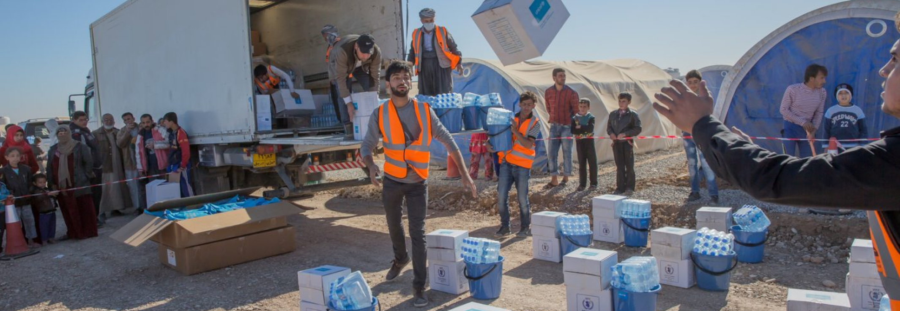

1.svg)
UNICEF- DISTRIBUTION DE GOURDES FREE WATER DANS LA VILLE D'AMRA AU YEMEN
Aujourd’hui, plus de 2,4 milliards de personnes ne disposent pas d’installations d’assainissement améliorée d’eau et plus de 663 millions n’ont pas accès à des sources d’approvisionnement en eau améliorées. Sans interventions et mesures concernant l’hygiène, le traitement et l’accessibilité de l’eau, les vies de millions d’enfants sont en danger. Pour les enfants de moins de cinq ans, les maladies liées à l’eau et son assainissement sont l’une des causes principales de mortalité. Chaque jour, plus de 800 enfants meurent des suites d’une eaux contaminée et où mal traitée. L’équipe eau, assainissement et hygiène (WASH) de l’UNICEF intervient dans plus de cents pays afin de tenter de soulager les peuples soumis à cette problématique. A son actif l’UNICEF, A permis de pourvoir 14 millions de personnes en eau potable et 11 millions d’autres en assainissement de base. Nous sommes fiers de participer à cette oeuvre humanitaire avec notre gourde FREE WATER et permettre à des millions d’enfants de prétendre à une hygiène de vie qui devrait être accessible à tous.